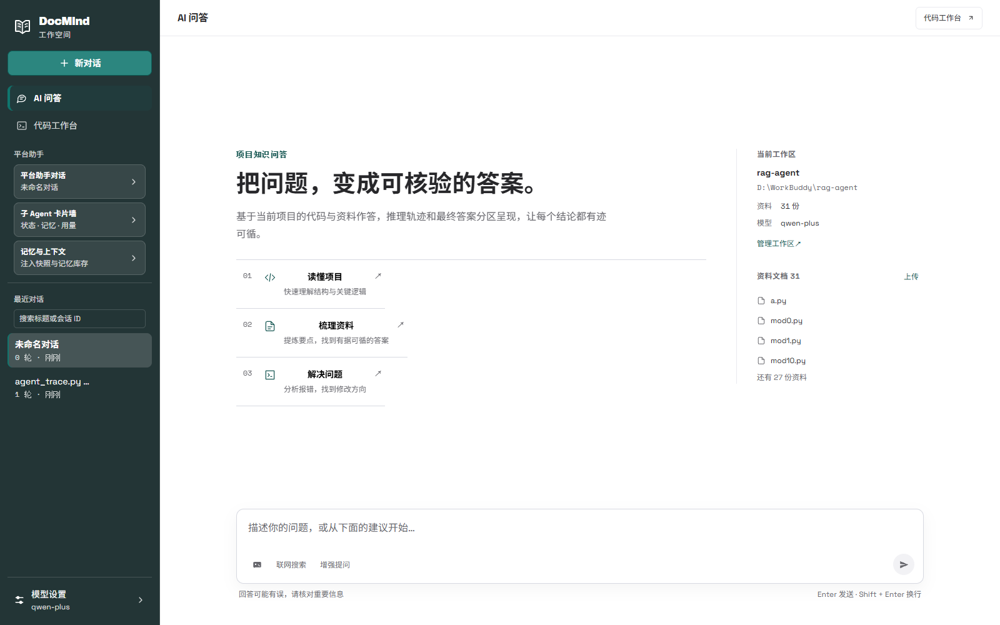
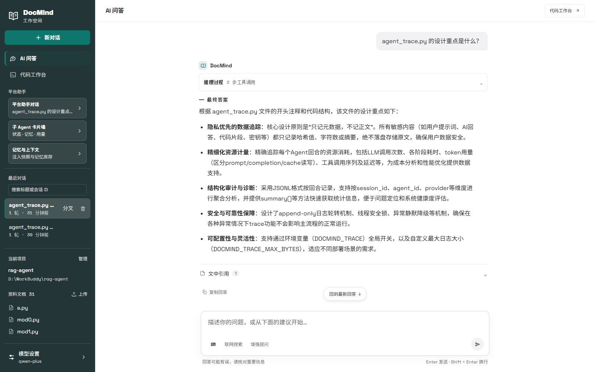
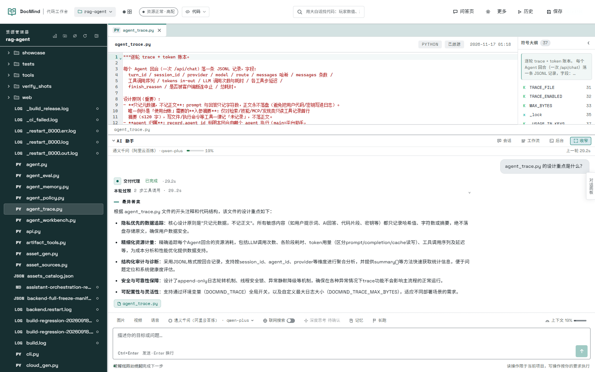
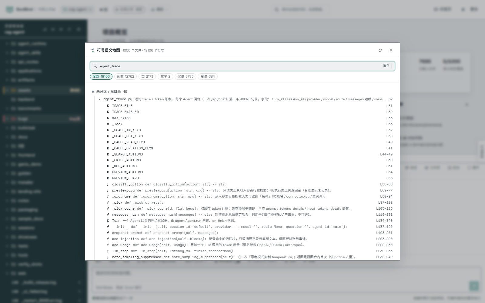
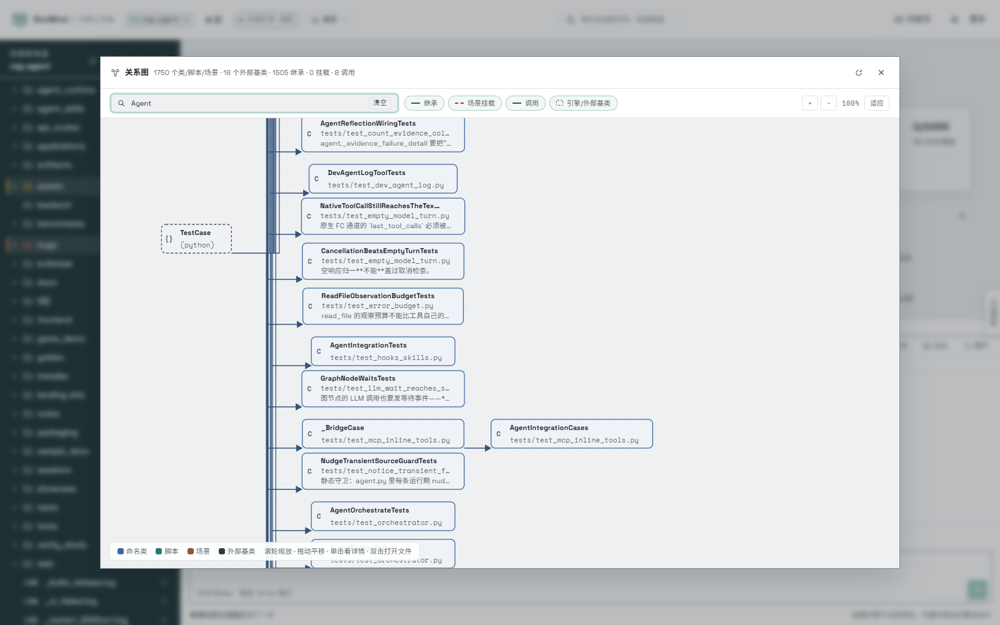
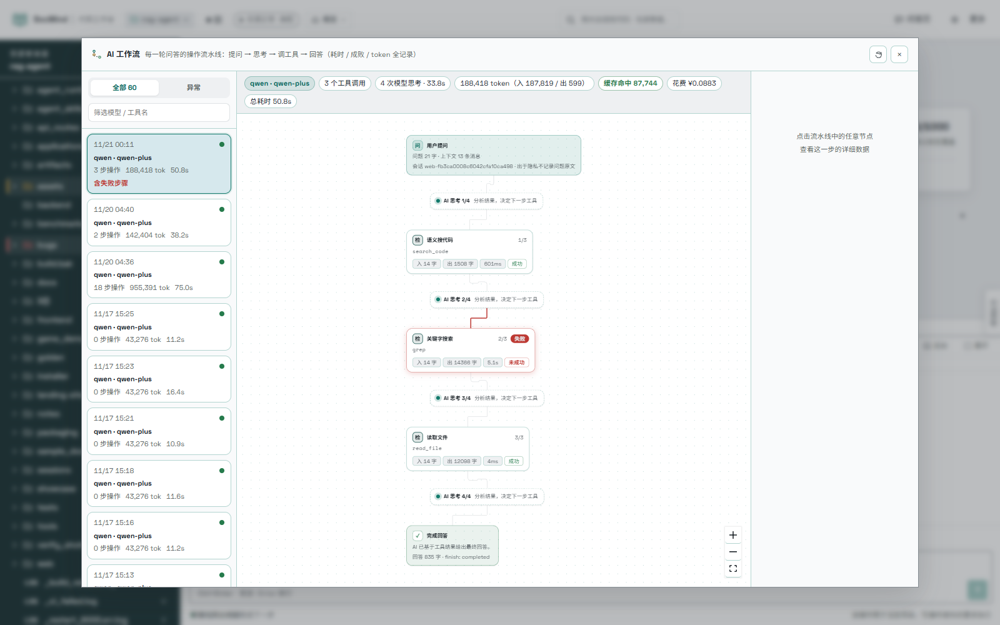
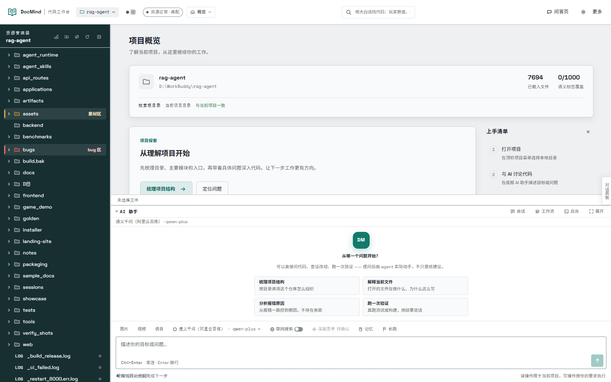
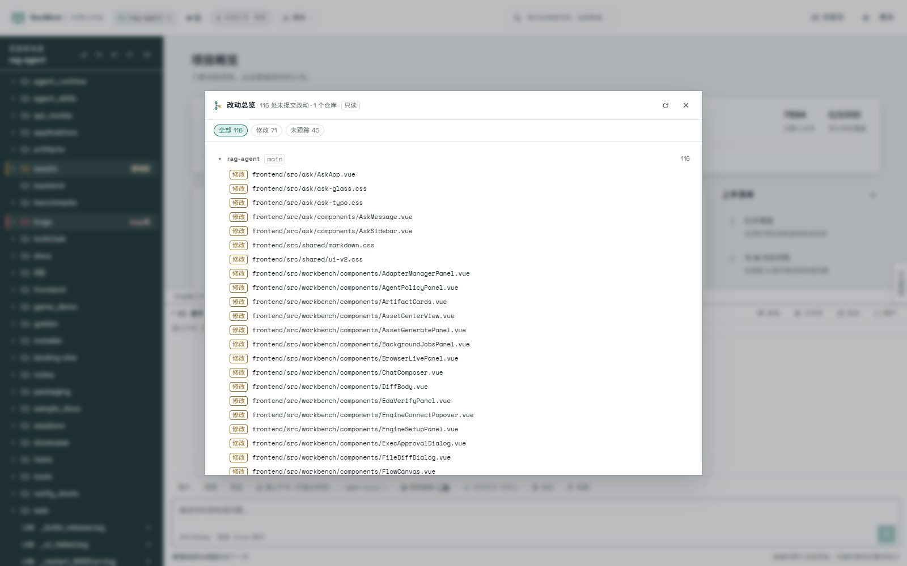
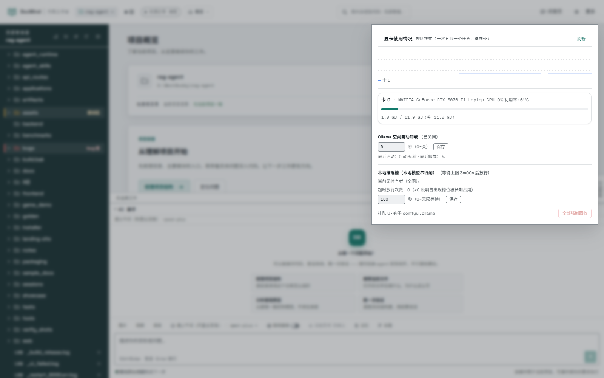

幻觉：凭印象指路
AI 说「伤害计算在 player.py」，而这个文件根本不存在。没有证据的结论，在真实工程里就是事故。
解法让每条结论都带可核对证据：文件行号、代码块哈希、检索命中数、工具返回原文。
工程化的解法不是「请模型更小心」，也不是在提示词里祈祷——而是把每一层都做成可以被测出来的护栏。
AI 说「伤害计算在 player.py」，而这个文件根本不存在。没有证据的结论，在真实工程里就是事故。
不知道这次改了什么、烧了多少 token、下次会不会再犯。没有账本，就没有复盘。
执行、工具、上下文、状态、生命周期、评估——每层职责单一，护栏可以单独验证，也可以组合复用。
ReAct + 反思重试、原生 function-calling、plan 模式、风险分档的子代理委派、并行只读批次、DAG 多代理编排与失败重规划。agent.py agent_runtime/delegation.py orchestrator.py
声明式工具注册表；参数校验、域名白名单、受控写（先读后写 + 体积上限 + 语法校验 + 人工确认）。tools.py agent_runtime/tool_domains.py
prompt token 预算、观察截断、轨迹裁剪（保 system 与当前问题）、历史滚动摘要——不让上下文与提示词爆炸。agent.py::_fit_budget
逐轮 trace 账本（只记元数据不记正文）、会话隔离与持久化、跨重启恢复。agent_trace.py sessions.py
钩子 / 技能热插拔、人工审批门、按 provider 计价的成本熔断。hooks.py skills.py pricing.py
黄金题规则打分 + 可选 LLM-judge + baseline 回归门，回归即退出码 1。agent_eval.py run_golden.py golden/
理解代码、改动与验收、工程设施、工作台底座——桌面端只是把同一套 Web UI 装进原生窗口。
.tscn 节点图，属性可改、撤销逐字节还原docmind/<任务名>、ComfyUI 出图先读后写、体积上限、语法校验、人工确认。写工具绝不并发，越界当场拦下。
回合级 / 任务级 / 变更集级，粒度不同；按字节还原，冲突如实报告不覆盖。
逐回合记录 token、延迟、工具序列与结局，只记元数据，不落 prompt 与回答正文。
token 预算、观察截断、轨迹裁剪、历史滚动摘要，四条一起压住提示词爆炸。
填目标与复盘间隔，模型在后台连续执行任务书；只有用户能停，每轮动作进决策账本。
规则打分 + 可选 LLM-judge，baseline 一旦回归即以退出码 1 拦下。
以下均为本机实际运行的截图：问答页与代码工作台两个入口、代码地图与关系图、对话流水线与对话现场，取自当前工程的最新界面。









提一个问题，模型在本机实时推理、逐次检索代码、逐个调用工具，最后给出带文件引用的答案——全过程无剪辑，等待时间也原样保留。
两段录屏均取自本机实际运行：工作台为云端 qwen-plus；问答页为本机 Ollama 的 qwen3.6:35b（零 API Key、完全离线）。界面未替换、过程未剪辑——包括本地模型那 50 秒的推理等待。
默认 provider 是本地 mock，装完依赖就能问答、改代码、跑验收；云端模型随时切换，界面里改完即生效。